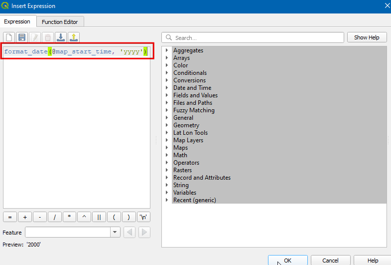
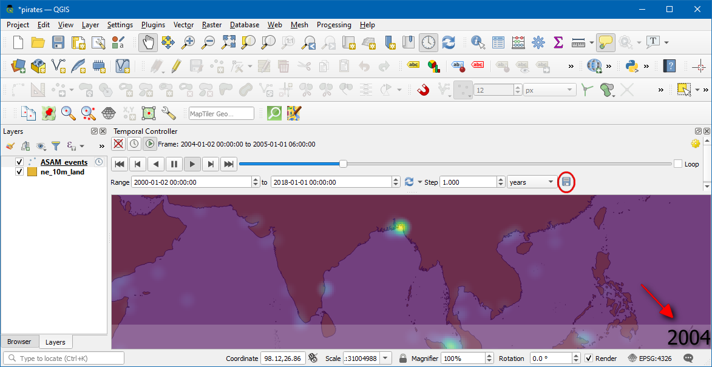

Animierte Zeitreihen-Daten (QGIS3)¶
Zeit ist ein wichtiger Bestandteil vieler Geodatensätze. Neben Ortsinformationen bietet die Zeit eine weitere Dimension für die Analyse und Visualisierung von Daten. Wenn wir mit einem Datensatz arbeiten, der Zeitstempel enthält, oder bei dem Beobachtungen in mehreren Zeitschritten aufgezeichnet wurden, können wir ihn mithilfe der Zeitsteuerung in QGIS problemlos visualisieren. die Zeitsteuerung erlaubt uns, Datenscheiben zwischen bestimmten Zeitintervallen anzuzeigen und zu exportieren, die zu Animationen kombiniert werden können.
Bemerkung
Die Zeitsteuerung ist ab der Version 3.14 von QGIS verfügbar. Für ältere Versionen von QGIS bietet der TimeManager ähnliche Funktionalitäten.
Überblick über die Aufgabe¶
Wir werden einen Punktlayer von Piraterievorfällen auf See verwenden, eine Heatmap-Visualisierung und eine Animation erstellen, wie sich die Hotspots der Piraterie in den letzten 2 Jahrzehnten verändert haben.
Weitere Fähigkeiten, die wir erlernen:¶
den Verteilungskarten- oder Heatmap-Renderer für die schnelle Visualisierung dichter Punktkarten verwenden
Karten-Projektionen erstellen oder verwenden
Beschaffung der Daten¶
Das Portal Maritime Safety Information der National Geospatial-Intelligence Agency der USA bietet ein Shapefile aller Vorfälle von Piraterie auf den Meeren in Form von Anti-shipping Activity Messages an. Wir laden die Version Arc Shapefile der Datenbank herunter.
Bei Natural Earth findet man verschiedene globale Vektorlayer. Wir laden folgenden Layer mit Polygonen der Länder herunter: 10m Physical Vectors - Land.
Der Einfachheit halber können auch Kopien der oben genannten Layer unter folgendem Link heruntergeladen werden:
Datenquelle: [NGA_MSI] [NATURALEARTH]
Arbeitsablauf¶
Wir suchen im Browser-Bereich das Verzeichnis, in dem die heruntergeladenen Daten gespeichert sind. Wir erweitern die Datei
ne_10m_land.zip, wählen den Layerne_10m_land.shpund ziehen den Layer in den Arbeitsbereich. Als nächstes suchen wir die DateiASAM_shp.zip, erweitern sie und ziehen den Layerasam_data_download/ASAM_events.shpin den Arbeitsbereich.

Nach dem Laden der Layer werden Punkte dargestellt, die einzelne Vorfälle von Piraterie verorten. Es gibt tausende von Vorfällen, und es ist kompliziert, Bereiche mit mehr Piraterie gegen solche mit weniger abzugrenzen. Zur Visualisierung eignen sich Verteilungskarten besser als einzelne Punkte. Wir wählen den Layer
ASAM_eventsund klicken den Button Layergestaltungsfenster öffnen im Layer-Panel. Wir öffnen die Dropdown-ListeEinzelsymbol.

Hier wählen wir
Heatmapund danachViridisaus der Liste für den Farbverlauf.

Den Wert für den Radius setzen wir auf
5.0. Unten im Fenster erweitern wir den Bereich Layergestaltung und setzen die Deckkraft auf75.0 %. Das ergibt einen netten Effekt zur Visualisierung der Hotspots mit dem darunterliegenden Layer der Länder.

Nun wollen wir die Daten animieren, um eine Karte der jährlichen Piraterie-Vorfälle zu erstellen. Wir öffnen das Kontextmenü für den Layer
ASAM_eventmit einem Rechtsklick und wählenEigenschaften....

Im Dialog Layereigenschaften wählen wir den Bereich Zeitlich und setzen die Option Dynamische Zeitsteuerung.

Die Quelldaten enthalten das Attribut
dateofocc- hier ist das Datum gespeichert, an dem der Vorfall auftrat. Dieses Feld werden wir benutzen, um die Punkte zu bestimmen, die innerhalb einer bestimmten Zeitspanne angezeigt werden. Wir wählenEinzelfeld mit Datum/Zeitunter Konfiguration unddateofoccals Feld.
Neben dem Layernamen wird nun ein Uhren-Symbol angezeigt. Wir klicken auf das Icon für das
Zeitsteuerungsfenster(Uhrensymbol) in der Kartennavigationswerkzeugleiste.

Wir klicken auf
Animierte Zeitnavigation(Abspielen-Icon), um die Steuerungselemente für die Animation zu aktivieren und anschließend auf Auf ganzen Bereich setzen (Aktualisieren-Icon) neben Animationsbereich, um den Zeitbereich automatisch auf den Bereich zu setzen, der im Datensatz enthalten ist.

Die Vorschau der Animation ist nun fertiggestellt. Wir setzen Schritt auf
1 Jahrund klicken danach den Abspielen-Button, um die Animation zu starten.

Bemerkung
Wenn die Animation zu schnell abläuft, kann die Abspielrate durch Klick auf Zeiteinstellungen (gelbes Zahnrad) rechts oben im Zeitsteuerungsfenster angepasst werden. Eine Verringerung der Abspielrate (Bilder pro Sekunde) verlangsamt die Animation.
Es könnte hilfreich sein, die aktuelle Zeitscheibe in einem Rahmen auf der Karte anzuzeigen. Wir können dies umsetzen, indem wir die eingebaute Titel-Anzeige verwenden. Dazu wählen wir .

Wir aktivieren die Option Titelbeschriftung aktivieren und klicken auf den Button Einen Ausdruck einfügen oder bearbeiten…. Dort geben wir den folgenden Ausdruck ein, um das Jahr anzuzeigen. Die Variable
@map_start_timeenthält den Zeitstempel der aktuell angezeigten Zeitscheibe. Wir können diesen Zeitstempel also verwenden, um das betreffende Jahr anzuzeigen. Vgl. die QGIS-Dokumentation bezüglich der Details der unterstützten Formatierungsoptionen für den Zeitstempel.
format_date(@map_start_time, 'yyyy')
Wir wählen in der Dropdown-Liste Schriftart eine
Schriftgrößevon25, setzen die Hintergrundbalkenfarbe aufWeißund die Transparenz auf50 %. Als Platzierung wählen wirUnten rechtsund klicken OK.

Sobald die Parameter entsprechend gesetzt sind, wird das Jahr wie dargestellt angezeigt. Um die Bilder zu exportieren und sie in das GIF-Format zu konvertieren, wählen wir Animation exportieren (Speichern-Icon) im Zeitsteuerungsfenster.

Wir klicken auf den Button
...neben Ausgabeverzeichnis, um das Verzeichnis auszuwählen, in dem die Bilder gespeichert werden sollen.

Im Bereich Ausdehnung wählen wir und klicken Speichern.

Nach Abschluss des Exports können wir im Ausgabeverzeichnis PNG-Bilder für jedes Jahr finden (insgesamt 18).

Nun wollen wir aus diesen Bildern noch ein animiertes GIF erzeugen. Es gibt viele Möglichkeiten, um Animationen aus einzelnen Bildern zu erzeugen. Ich bevorzuge ezgif als einfaches Online-Tool. Wir besuchen diese Website, klicken Durchsuchen und wählen alle von uns erstellten PNG-Dateien. Nach der Auswahl klicken wir den Button Upload Files und Make a GIF!. Nach der Erstellung können wir das GIF herunterladen, indem wir den Save-Button benutzen.

If you want to give feedback or share your experience with this tutorial, please comment below. (requires GitHub account)